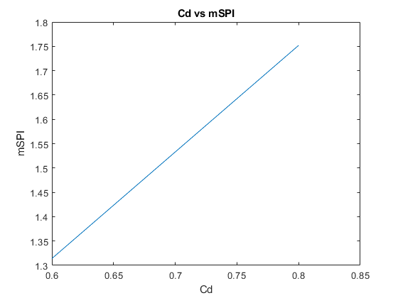

Injector Design Tool
The following is a comprehensive injector calculation tool. Make sure that all relevant functions are in the same path/folder as this script. Do NOT change the names of any functions.
Contents
clear all clc format short g %Injector Design Tool %Vignesh Sella %12/03/2018 %The following is a comprehensive injector calculation tool. %Make sure that all relevant functions are in the same path/folder as this %script. Do NOT change the names of any functions. %Handy Equations: % p1+1/2*rho*v1^2=p2+1/2*rho*v2^2 // Bernoulli's Equation % mdot=rho*s1*v1 // Mass Flow Rate
GIVENS/ASSUMPTIONS
global p0, p0=7.5*10^6; %Pa // Pressure in the oxidizer tank global v0, v0=0; %m/s // Initial velocity in the oxidizer tank global rho, rho=769.9; %kg/m^3 // Density of NOS at room temperature global mdot, mdot=1.53; %kg/s // Mass flow rate in steady state global d1, d1=0.0127; %m // Diamater of feed pipe, directly after oxidizer tank global d2, d2=0.030; %m // Diamater of manifold, directly before injector plate global p3, p3=4*10^6; %Pa // Expected combustion chamber pressure during steady state global d, d=1*10^-3; %m // Diameter of an individual orifice global k, k=2; %dimensionless // Head loss coefficient for radial inlet pseudo_p = 35; units = {'kg/m^3';'kg.s';'m';'Bars'}; T1 = table({'Rho';'Desired Mdot';'Orf D';'DeltaP'},[rho;mdot;d;pseudo_p],[units]); T1.Properties.VariableNames = {'Specification','Value','Units'}
T1 =
4×3 table
Specification Value Units
______________ _____ ________
'Rho' 769.9 'kg/m^3'
'Desired Mdot' 1.53 'kg.s'
'Orf D' 0.001 'm'
'DeltaP' 35 'Bars'
PV CALC
[p1, v1] = PVCalc(d1,p0,v0);
[p2, v2] = PVCalc(d2,p1,v1);
deltap= p2-p3; %Pa // Pressure differential of manifold and combustion chamber
ORIFICE GEOMETRY
%------------------------- Ao = pi*(d^2/4); %m^2 // Area of an individual orifice Vinj = sqrt((2*deltap)/(k*rho)); %m/s // Velocity of fluid through injector **ALSO EQUAL TO v3/sqrt(k)** n_tot = mdot/(rho*Vinj*Ao); %# // Number of orifices in injector plate INT_n_tot = ceil(n_tot); %------------------------- Ao_tot = Ao*INT_n_tot; %m^2 // Area of all orifices combined Ao_tot_mm = Ao_tot*10^6; %mm^2 // Area of all orifices combined %------------------------- d_tot = d*INT_n_tot; %m // Total diameter of all orifices combined d_tot_mm = d*INT_n_tot*1000; %mm // Total diamter of all orifices combined length = 7*d; unitz = {'#';'m/s';'mm^2';'m'}; T2 = table({'#ofOrf';'Velocity';'A2';'Length'},[INT_n_tot;Vinj;Ao_tot_mm;length],[unitz]); T2.Properties.VariableNames = {'Specficiation', 'Value','Units'}
T2 =
4×3 table
Specficiation Value Units
_____________ ______ ______
'#ofOrf' 38 '#'
'Velocity' 67.395 'm/s'
'A2' 29.845 'mm^2'
'Length' 0.007 'm'
FLOW MODELING
%Cd=0.7; %dimensionless // Ratio of actual flow to theoretical %------------------------- %SINGLE PHASE INCOMPRESSIBLE %Equation: mSPI = Cd*Ao_tot*sqrt(2*rho*deltap); %kg/s %Anonymous function which takes in various Cd values, and then exports %various mSPI values. mSPI = @(Cd) (Cd*Ao_tot*sqrt(2*rho*deltap)); Cd_range = linspace(.6,.8,10); %Range of values given to Cd mSPI_range = mSPI(Cd_range); mSPI_range_AVG = mean(mSPI_range) plot(Cd_range,mSPI_range) title('Cd vs mSPI') xlabel('Cd') ylabel('mSPI') %------------------------- %INSERT mHEM, mDYER %------------------------- %INSERT mHEM, mDYER
mSPI_range_AVG =
1.533
 ATOMIZATION
%NITROUS OXIDE CHARACTERISITICS (at 10 degC) dyn=0.007146; %Pa // dynamic viscosity of NOS kin = 8.39712e-8; %m^2/s (converted from cSt) // kinematic viscosity st=.003948; %N/m // surface tension of NOS %------------------------- %REYNOLDS NUMBER Re=(Vinj*d)/kin; %------------------------- %OHNESORGE NUMBER Oh=dyn/sqrt(rho*st*d); %------------------------- %WEBER NUMBER We=rho*Vinj^2*d/st ; %------------------------- T2 = table({'Reynolds';'Ohnesorge';'Weber'},[Re;Oh;We]); T2.Properties.VariableNames = {'Specficiation', 'Value'}
T2 =
3×2 table
Specficiation Value
_____________ __________
'Reynolds' 8.026e+05
'Ohnesorge' 0.12962
'Weber' 8.8575e+05